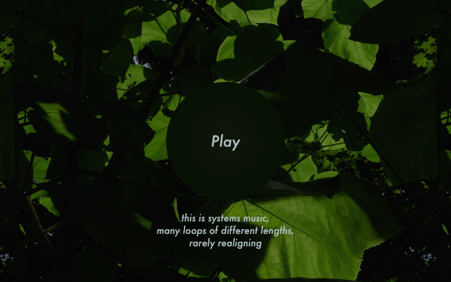
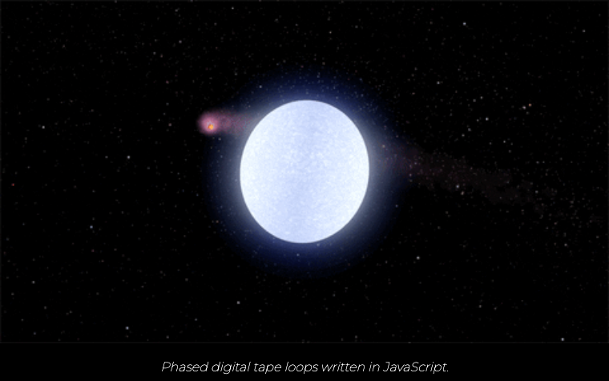
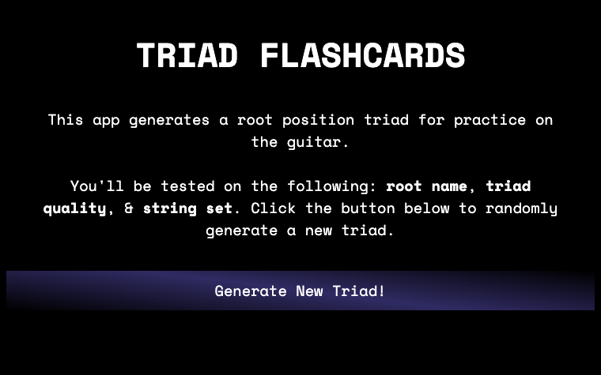

No. 11 Experiments · c. 2020
Experiments & early work
Smaller pieces I built for the love of it — mostly while learning to code through The Odin Project around 2020. Generative “systems music” in the browser and a couple of music-practice tools. Rough around the edges, but each one taught me something.

Music for Airports
Generative “systems music” after Brian Eno — many loops of different lengths, rarely realigning.
JavaScript · Web Audio

It's Gonna Rain
Phased digital tape loops after Steve Reich — two loops drifting slowly out of sync.
JavaScript · Web Audio

Triad Flashcards
A practice tool that generates root-position triads — by root, quality, and string set — for drilling the fretboard.
HTML · CSS · JavaScript
Random Interval Generator
A tiny ear-training tool that calls out random intervals to practice against — one of my first JavaScript apps.
HTML · CSS · JavaScript